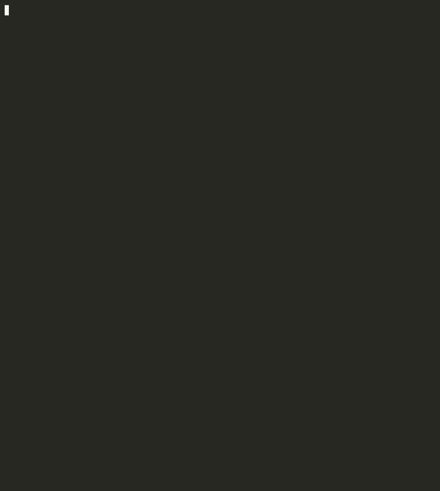

fakegreen scans the git diff and flags every way an AI coding agent faked a green build: skipped or deleted tests, weakened assertions, new suppressions, test-env special-casing, swallowed errors, and CI forced green with || true.

It looks only at added and removed lines, lexes out comments and strings, and ignores pure moves and renames. Same diff in, same answer out, every time.
.skip, xit, @pytest.mark.skip, t.Skip(), #[ignore], @Disabled, .only, deleted test files, dropped test counts.
toBe(42) → toBeDefined(), assertions removed, expect(true).toBe(true), assert True.
@ts-ignore, eslint-disable, # type: ignore, noqa, //nolint, #[allow], coverage exclusions, weakened tsconfig/mypy.
|| true, continue-on-error, allow_failure, removed or disabled test steps, neutered test scripts, lowered coverage thresholds.
Production code branching on NODE_ENV === 'test', JEST_WORKER_ID, "pytest" in sys.modules, cfg!(test).
New empty catch {}, except: pass, .catch(() => {}), if err != nil {}.
Hook fakegreen into your agent's end-of-turn event. When it finds something, the agent is told exactly what it faked and is asked to fix it or explain why.
# agent end-of-turn hooks npx fakegreen install claude npx fakegreen install codex npx fakegreen install gemini # everywhere else npx fakegreen install pre-commit npx fakegreen --base origin/main --sarif > fg.sarif
# .github/workflows/fakegreen.yml - uses: actions/checkout@v4 with: { fetch-depth: 0 } - uses: fitzyracing1/fakegreen@v0.1.1 with: fail-on: high HIGH test/cart.test.ts:9 test-skipped MED src/cart.ts:4 suppression-added
The CLI, hooks and GitHub Action stay free and open source. I'm considering a hosted version for teams running AI agents across many repos. It isn't built yet. If enough teams want it, it gets built with the first ones on the waitlist.
Rolling out coding agents and want help now? I also do setup and custom-rule work. Email fitzyracing1@gmail.com.
Like the project? Sponsor it on GitHub.